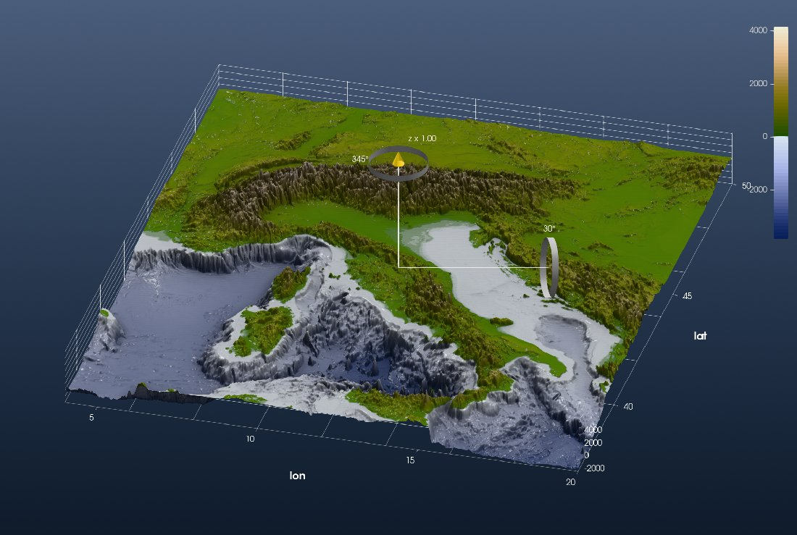
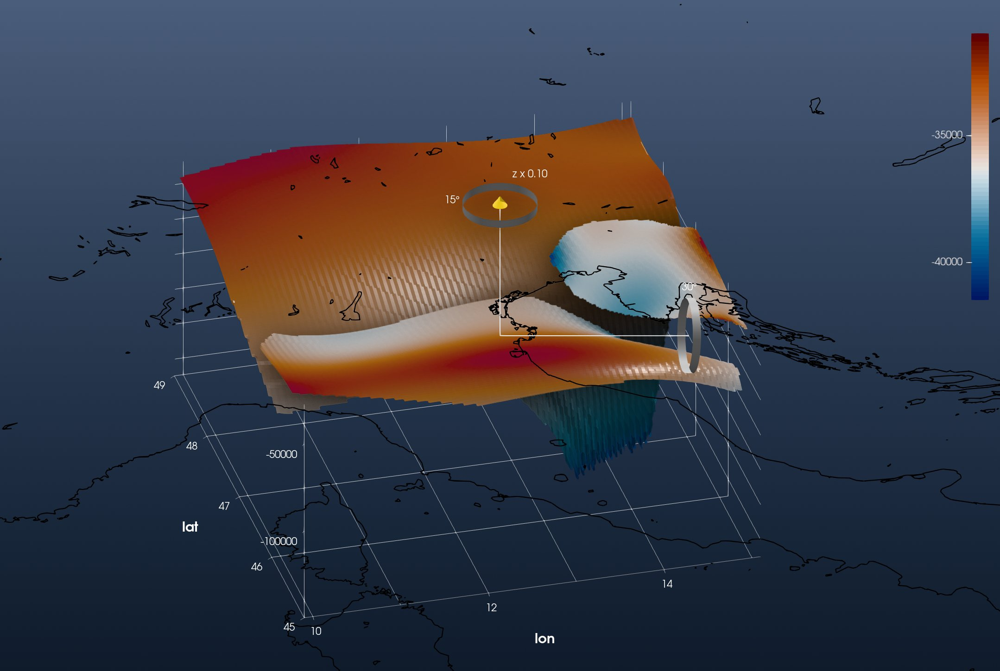
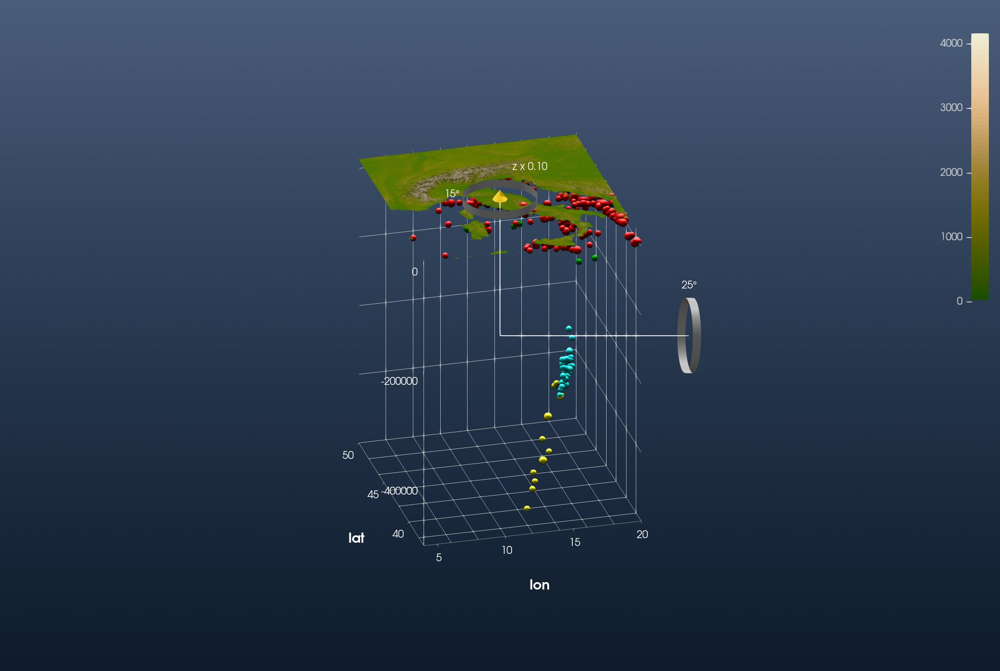
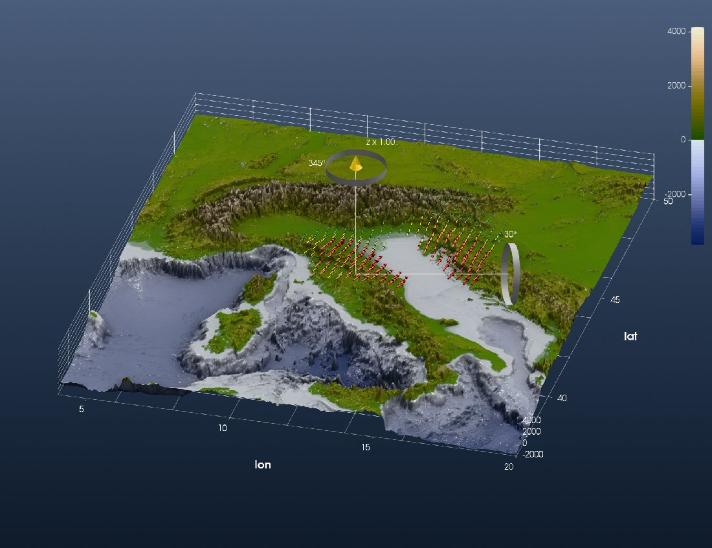
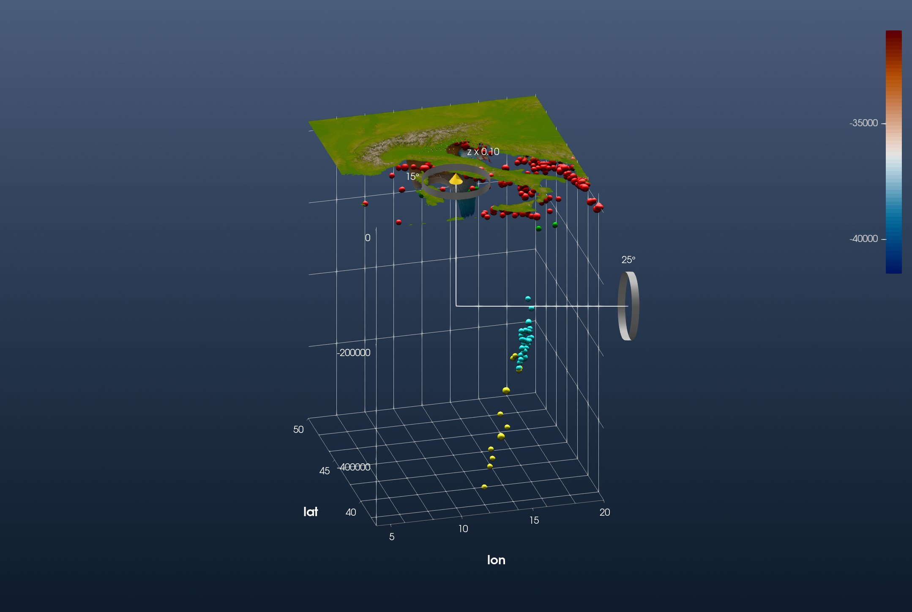

Tutorial: Alpine Data Integration
This is the GeophysicalModelGenerator.jl tutorial Alpine data integration redone with iGMT and plain GMT.jl commands: no DelimitedFiles, NearestNeighbors, Plots or ParaView. It brings the topography, the Moho, the seismicity and the GPS velocities of the Alps into one 3-D scene.
1. Surface topography
using GMT, InteractiveGMT
Topo = grdcut("@earth_relief_01m", region=(4, 20, 37, 50))
fig = iview(Topo; cmap=:oleron)Switch to 3D on the toolbar and turn the view with the gizmo:

2. Moho topography
The Moho map of Mroczek et al. (2023) is a CSV file with 12 header lines. Its last column says which Moho a point belongs to: EU (European), AD (Adriatic) or PA (Pannonian). GMG reads it with readdlm and splits the columns by hand. GMT's gmtconvert does both: e=",EU" keeps only the records that contain ,EU, and i picks longitude, latitude and depth, the depth turned into metres below sea level (+s-1000):
download("https://datapub.gfz-potsdam.de/download/10.5880.GFZ.2.4.2021.009NUEfb/2021-009_Mroczek-et-al_SWATHD_moho_jul22.csv",
"MohoMroczek2023.csv")
MohoEU = gmtconvert("MohoMroczek2023.csv", h=12, i="4,3,5+s-1000", e=",EU")
MohoAD = gmtconvert("MohoMroczek2023.csv", h=12, i="4,3,5+s-1000", e=",AD")
MohoPA = gmtconvert("MohoMroczek2023.csv", h=12, i="4,3,5+s-1000", e=",PA")GMG then grids each Moho on a 0.02° grid, keeping a node only when a data point lies within 0.02° of it (a KD-tree search). That is GMT's nearneighbor with one sector:
GEU = nearneighbor(MohoEU, region=(9.9, 15.1, 45, 49), inc=0.02, S="0.02d", N=1)
GAD = nearneighbor(MohoAD, region=(9.9, 15.1, 45, 49), inc=0.02, S="0.02d", N=1)
GPA = nearneighbor(MohoPA, region=(9.9, 15.1, 45, 49), inc=0.02, S="0.02d", N=1)The three Mohos are elevations in metres, like the topography, so they go on its vertical scale (samezscale=true). Each added grid comes on display alone; tick the others back on:
add!(fig, GEU; name="Moho EU", cmap=:vik, samezscale=true)
add!(fig, GAD; name="Moho AD", cmap=:vik, samezscale=true)
add!(fig, GPA; name="Moho PA", cmap=:vik, samezscale=true)
setvisible!(fig, "Moho EU")
setvisible!(fig, "Moho AD")Every added grid brings its own axes, and one figure has one set. The three Mohos share one box, so keep the European Moho's and switch the other two off:
setvisible!(fig, "Axes", false; layer="Moho AD")
setvisible!(fig, "Axes", false; layer="Moho PA")The Moho lies 30 to 150 km deep, so lower the vertical exaggeration (View → Vertical Exaggeration…, 0.1) and look from below the sea surface. The coastline makes the map readable without the topography:
Coast = coast(region=(4, 20, 37, 50), shore=true, resolution=:intermediate, dump=true)
add!(fig, Coast; color=:black)
3. Seismicity
GMG downloads the ISC-EHB bulletin as QuakeML and reads it with its own parser. ISC also serves the bulletin in the ISF format, and GMT reads ISF (gmtisf), so here it is ISF:
download("http://www.isc.ac.uk/cgi-bin/web-db-run?out_format=ISF&searchshape=RECT&top_lat=49&bot_lat=37&left_lon=4&right_lon=20&start_year=1990&start_month=1&start_day=01&start_time=00%3A00%3A00&end_year=2015&end_month=12&end_day=31&end_time=00%3A00%3A00&min_mag=3.0&req_mag_type=Any&req_mag_agcy=Any&include_magnitudes=on&include_links=off&include_headers=on&include_comments=off&prime_only=on&request=COLLECTED&req_agcy=ISC-EHB&table_owner=iscehb",
"ISCData.isf")
EQ = gmtisf("ISCData.isf") # 349 events: lon, lat, depth, magnitude, date(gmtisf is what iGMT's Seismicity tool uses to read the file below.)
GMG shows the topography of the land only, so that what lies under the sea stays visible. grdclip does that:
Land = grdclip(Topo, below="0/NaN")
fig = iview(Land; cmap=:oleron)Then Geophysics → Seismicity…: choose ISF formated catalog (ascii) and ISCData.isf, and tick Use different sizes for magnitude intervals and Use different colors for depth intervals. Every event is plotted at its own depth:

The deep events are the Calabrian slab, dipping to 500 km under the Tyrrhenian Sea.
4. GPS velocities
The GPS velocities of Sánchez et al. (2018) are the subject of Tutorial: GPS Velocities of the Alps. Read the horizontal field as there:
url = "https://store.pangaea.de/Publications/Sanchez-etal_2018/ALPS2017_DEF_"
Vh = gmtread(url * "HZ.GRD", data=true, h=17, incols="0,1,2+s1000,3+s1000") # lon lat Ve Vn, mm/yr
gmtwrite("ALPS2017_Vh_mm_yr.txt", Vh)and bring it in with File → Open xy(z) → Import Arrow field: solid 3-D arrows, coloured by magnitude. Arrow length… in the arrows' properties makes them longer.

5. Everything together
All of it in one window: the land topography, the seismicity, the three Mohos and the GPS arrows. The land topography's axes frame the whole scene, so the three Mohos' own axes are switched off:
setvisible!(fig, "Axes", false; layer="Moho EU")
setvisible!(fig, "Axes", false; layer="Moho AD")
setvisible!(fig, "Axes", false; layer="Moho PA")Set the vertical exaggeration to 0.1 on every layer, and look from the south-south-west:
